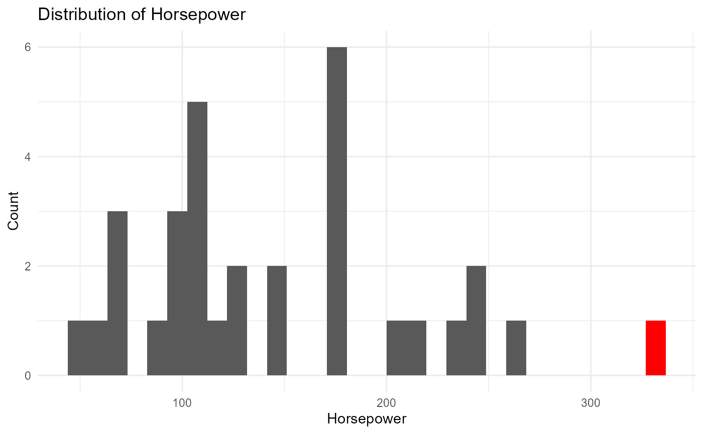

Univariate
Univariate.Rmd
library(qacOutliers)
#> Warning: replacing previous import 'dplyr::lag' by 'stats::lag' when loading
#> 'qacOutliers'
#> Warning: replacing previous import 'dplyr::filter' by 'stats::filter' when
#> loading 'qacOutliers'
#> Warning: replacing previous import 'dbscan::as.dendrogram' by
#> 'stats::as.dendrogram' when loading 'qacOutliers'Boxplot Method
The boxplot method for univariate outlier detection identifies extreme data points by examining the distribution of values using a boxplot. In this method, the “whiskers” of the boxplot represent the range of typical values within a dataset. In this function, outliers are defined as values that fall outside the whiskers, which are calculated as Q1−1.58×IQR for the lower bound and Q3+1.58×IQR for the upper bound, where Q1 and Q3 are the first and third quartiles, respectively, and IQR is the interquartile range (the difference between Q3 and Q1) to allow for a broader range and a different threshold for detecting extreme values. 1.58 is the length of the whiskers as multiple of IQR.
This method helps quickly identify potential outliers, which are plotted individually and can indicate unusual or problematic data points that may warrant further investigation.
The output will provide the identified outliers along with their corresponding row numbers, and a graphical representation will be generated with the outliers highlighted in red.
data(mtcars)
univOutliers(mtcars, "mpg", method="boxplot")
#>
#> Using boxplot method for mpg
#> No outliers detected for mpg
univOutliers(mtcars, "hp", method="boxplot")
#>
#> Using boxplot method for hp
#> Outliers detected for hp :
#> Row 31 : 335
univOutliers(mtcars, "qsec", method="boxplot")
#>
#> Using boxplot method for qsec
#> Outliers detected for qsec :
#> Row 9 : 22.9
MAD
The MAD (Median Absolute Deviation) method for univariate outlier detection identifies outliers based on a robust measure of variability, the median absolute deviation. In this method, a red line represents the median of the values in the target vector. The upper CI limit is the median + 3MAD and the lower CI limit is median - 3MAD. The points outside of the confidence interval are the outliers detected by the MAD method.
The output provides a list of identified outliers along with their row numbers and a graphical representation with the outliers highlighted in red.